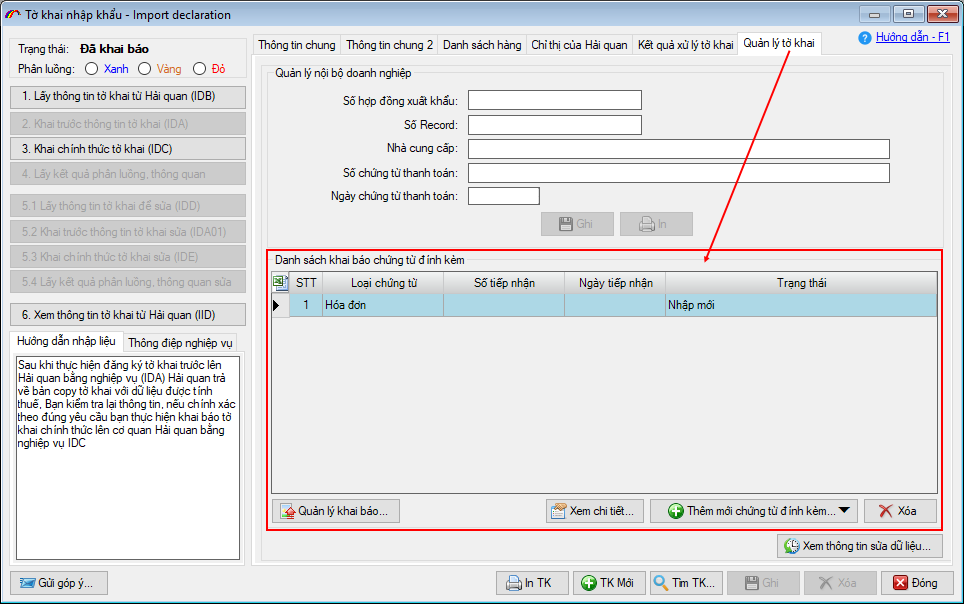
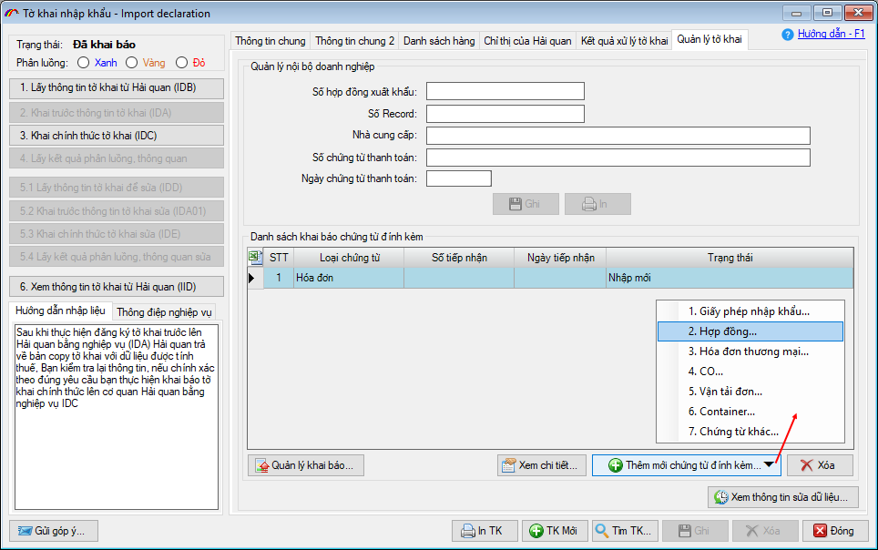
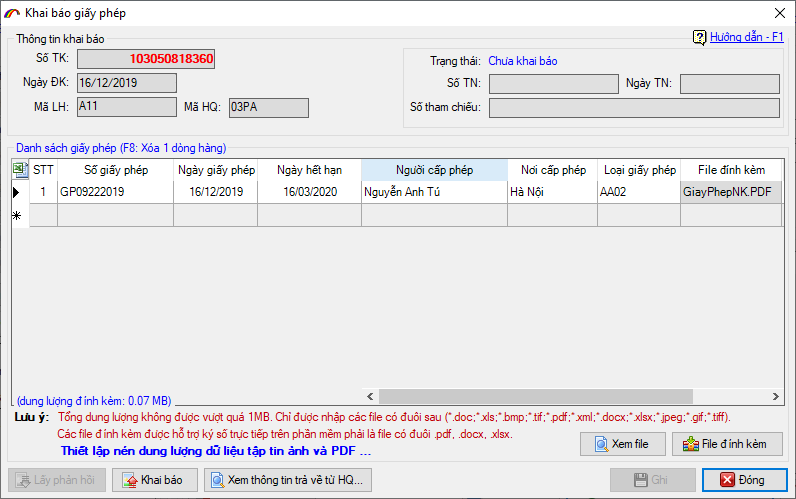
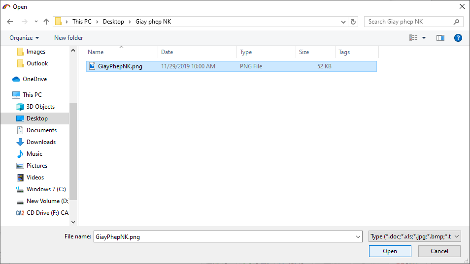
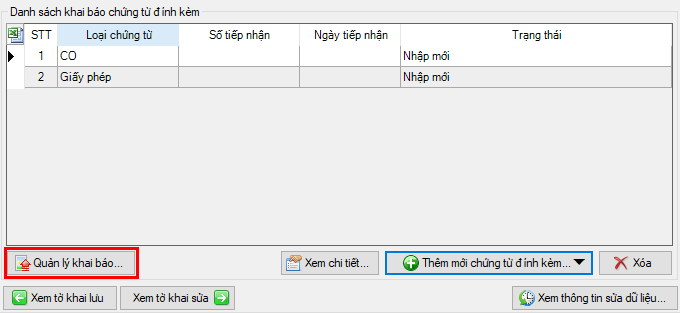
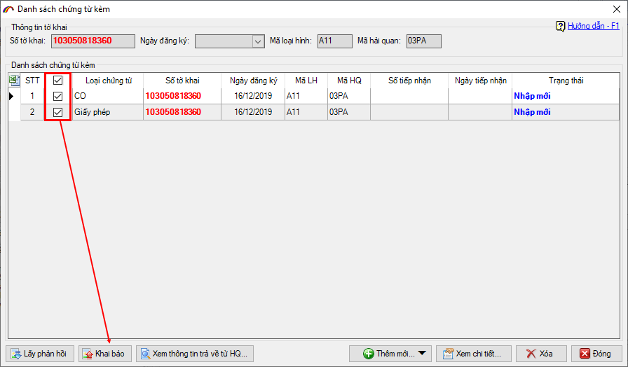
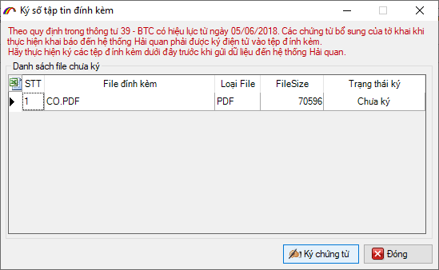
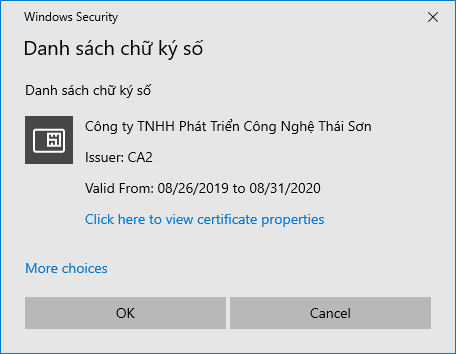
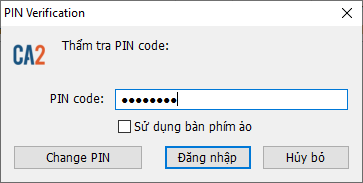
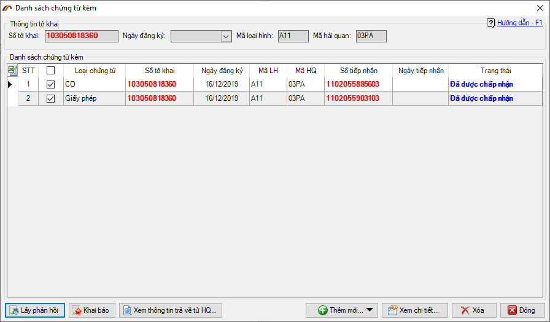

KHAI BÁO BỔ SUNG CHỨNG TỪ ĐÍNH KÈM ĐIỆN TỬ
Để thuận tiện cho doanh nghiệp khai báo bổ sung chứng từ đính kèm tờ khai theo quy định của cơ quan Hải quan. Chúng tôi xin hướng dẫn cách khai báo cụ thể trên phần mềm ECUS5VNACCS như sau.
1. Thời điểm khai báo bổ sung chứng từ:
Theo quy định của cơ quan Hải quan, người khai phải thực hiện khai báo bổ sung chứng từ đính kèm điện tử cho tờ khai trước thời điểm khai chính thức (tức là trước khi thực hiện IDC/EDC).
2. Hướng dẫn thực hiện.
Để khai báo bạn vào tab "Quản lý tờ khai" trên tờ khai đã thực hiện khai trước thông tin IDA/EDA:

Tại đây để thêm mới một chứng từ, bạn nhấn vào nút "Thêm mới chứng từ đính kèm…" phần mềm sẽ hiện ra các loại chứng từ để bạn chọn như: Giấy phép nhập khẩu, Hợp đồng thương mại, Hóa đơn thương mại, CO…

Chọn vào chứng từ cần bổ sung, ví dụ tôi chọn Giấy phép nhập khẩu, màn hình chức năng hiện ra như sau:

Nhập vào đầy đủ các thông tin về giấy phép sau đó nhấn nút "File đính kèm" để tìm và chọn file giấy phép scan:

Cuối cùng bạn nhấn nút Ghi để lưu lại thông tin vừa nhập.
Nếu chỉ có một chứng từ hoặc muốn khai báo ngay thì bạn thực hiện khai báo và lấy phản hồi bằng cách nhấn nút "Khai báo" và "Lấy phản hồi" ngay trên giao diện chứng từ vừa nhập.
Nếu có nhiều chứng từ bổ sung, bạn có thể tiến hành nhập lần lượt các chứng từ sau đó khai báo cùng 1 lần bằng cách nhấn nút "Quản lý khai báo…":

Giao diện chức năng khai báo và lấy phản hồi nhiều chứng từ hiện ra như sau:

Bạn đánh chọn vào các chứng từ cần khai báo sau đó nhấn nút "Khai báo", lúc này máy tính của bạn đã phải được cắm thiết bị chữ ký số. Phần mềm sẽ yêu cầu thực hiện ký số file đính kèm (nếu chưa ký):

Nhấn vào "Ký chứng từ" và chọn thiết bị chữ ký số trong danh sách:

Nhấn OK và nhập mã PIN cho thiết bị chữ ký số sau đó nhấn Đăng nhập:

Khai báo thành công, bạn tiếp tục nhấn nút "Lấy phản hồi" để phần mềm lấy kết quả của danh sách chứng từ về cho bạn.
Lưu ý: việc khai báo chứng từ đính kèm điện tử chỉ cần có số tiếp nhận là việc khai báo đã hoàn tất.

Bản quyền © thuộc về Công ty TNHH Phát triển công nghệ Thái Sơn